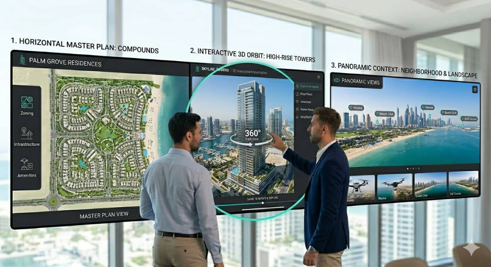

جولة افتراضية 360°
جولة داخلية تفاعلية مدمجة مع بيانات الوحدة.
عرض المشروع
حيث أعمل على تحويل الماستر بلان إلى منصة تفاعلية مترابطة، تربط الوحدات ببياناتها، وتدمج الجولات الافتراضية والخرائط ضمن تجربة استخدام واضحة تدعم أهداف البيع وتسهّل اختيار الوحدة.
تحميل السيرة الذاتية
أعمل على تصميم وتنفيذ أنظمة رقمية تفاعلية لمشاريع البيع
على الخارطة، حيث أقوم بتحويل المخططات السكنية إلى منصات رقمية مترابطة تدعم فهم المشروع واتخاذ قرار الشراء.
أبني الهيكل التفاعلي للمشروع، أربط الوحدات ببياناتها عبر منطق واضح، وأدمج الجولات الافتراضية، النماذج ثلاثية الأبعاد، والخرائط ضمن تجربة استخدام متكاملة.
أتحمل مسؤولية تصميم تجربة المستخدم داخل المنصة، مع التنسيق المباشر مع فرق Unreal لضمان تكامل العرض البصري مع النظام التفاعلي.
هدفي هو بناء تجربة رقمية واضحة، منظمة، ومدعومة بالبيانات تعكس المشروع بدقة قبل تنفيذه على أرض الواقع.
تحويل المخططات الي مخططات تفاعلية قائمة على تقسيم منطقي للوحدات وربطها ببيانات ديناميكية، مع تحديد منطق التنقل بين مستويات المشروع.
تحويل التصاميم الداخلية للوحدات الي جولات افتراضية وربطها بالمنصة الرقمية للمشروع، مع هيكلة مسار تنقل واضح يدعم اختيار الوحدة.
دمج أنظمة الخرائط لعرض الموقع الجغرافي للمشروع والخدمات المحيطة به، مع امكانية لحساب المسافات والوقت بين موقع المشروع و الخدمات، مما يعزز القيمة للمشروع ويساعد العميل في اتخاذ القرار
تنفيذ تكامل بين النموذج ثلاثي الأبعاد وأدوات القياس داخل المنصة الرقمية، بما يتيح قراءة أبعاد المساحات بشكل تفاعلي ودعم تحليل المستخدم للمساحة قبل الشراء.
إدارة التكامل بين مخرجات Unreal والمنصة التفاعلية، مع تحديد معايير العرض البصري بما يخدم رحلة المستخدم داخل المشروع .
بناء واجهات واضحة ومسارات تفاعل تقلّل خطوات المستخدم وتزيد التحويل.
ربط الجولات 360° بالبيانات داخل المنصة لتجربة متكاملة.
عرض المواقع والخدمات القريبة مع أدوات قياس المسافات ووقت الوصول.
نموذج موحّد للمواصفات، الوسائط، والحالة مع إمكانيات فلترة ومقارنة.
تصميم مسار واضح من التصفح إلى حفظ ومشاركة وتسجيل الاهتمام.
جولة داخلية تفاعلية مدمجة مع بيانات الوحدة.
عرض المشروعجولة خارجية تفاعلية تُظهر البيئة الخارجية للمشروع.
عرض المشروعجولة افتراضية داخل احد المنازل بغرض الذكري
عرض المشروعجولة داخلية تفاعلية مدمجة من أحد المشاريع
عرض المشروع